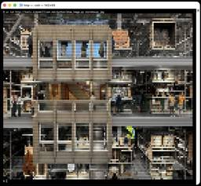
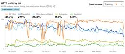

Simon Willison's Weblog
フィード

Quoting IanCal
Simon Willison's Weblog
<blockquote cite="https://news.ycombinator.com/item?id=45135302#45135852"><p>RDF has the same problems as the SQL schemas with information scattered. What fields mean requires documentation.</p><p>There - they have a name on a person. What name? Given? Legal? Chosen? Preferred for this use case?</p><p>You only have one ID for Apple eh? Companies are complex to model, do you mean Apple just as someone would talk about it? The legal structure of entities that underpins all major companies, what part of it is referred to?</p><p>I spent a long time building identifiers for universities and companies (which was taken for <a href="https://ror.org/">ROR</a> later) and it was a nightmare to say what a university even was. What’s the name of Cambridge? It’s not “Cambridge University” or “The university of Cambridge” legally. But it also is the actual name as people use it. <em>[It's <a href="https://www.cam.ac.uk/about-the-university/how-the-university-and-colleges-work/the-university-as-a-cha
8時間前
Why I think the $1.5 billion Anthropic class action settlement may count as a win for Anthropic
Simon Willison's Weblog
<p><strong><a href="https://www.theverge.com/anthropic/773087/anthropic-to-pay-1-5-billion-to-authors-in-landmark-ai-settlement">Anthropic to pay $1.5 billion to authors in landmark AI settlement</a></strong></p>I wrote about <a href="https://simonwillison.net/2025/Jun/24/anthropic-training/">the details of this case</a> when it was found that Anthropic's training on book content was fair use, but they needed to have purchased individual copies of the books first... and they had seeded their collection with pirated ebooks from Books3, PiLiMi and LibGen.</p><p>The remaining open question from that case was the penalty for pirating those 500,000 books. That question has now been resolved in a settlement:</p><blockquote><p>Anthropic has reached an agreement to pay “at least” a staggering $1.5 billion, plus interest, to authors to settle its class-action lawsuit. The amount breaks down to smaller payouts expected to be approximately $3,000 per book or work.</p></blockquote><p>It's wild to
9時間前
Quoting Kenton Varda
Simon Willison's Weblog
<blockquote cite="https://twitter.com/KentonVarda/status/1963966469148180839"><p>After struggling for years trying to figure out why people think [Cloudflare] Durable Objects are complicated, I'm increasingly convinced that it's just that they <em>sound</em> complicated.</p><p>Feels like we can solve 90% of it by renaming <code>DurableObject</code> to <code>StatefulWorker</code>?</p><p>It's just a worker that has state. And because it has state, it also has to have a name, so that you can route to the specific worker that has the state you care about. There may be a sqlite database attached, there may be a container attached. Those are just part of the state.</p></blockquote><p class="cite">— <a href="https://twitter.com/KentonVarda/status/1963966469148180839">Kenton Varda</a></p> <p>Tags: <a href="https://simonwillison.net/tags/kenton-varda">kenton-varda</a>, <a href="https://simonwillison.net/tags/sqlite">sqlite</a>, <a href="https://simonwillison.net/tags/cloudflare">cloudfla
1日前
Introducing EmbeddingGemma
Simon Willison's Weblog
<p><strong><a href="https://developers.googleblog.com/en/introducing-embeddinggemma/">Introducing EmbeddingGemma</a></strong></p>Brand new open weights (under the slightly janky <a href="https://ai.google.dev/gemma/terms">Gemma license</a>) 308M parameter embedding model from Google:</p><blockquote><p>Based on the Gemma 3 architecture, EmbeddingGemma is trained on 100+ languages and is small enough to run on less than 200MB of RAM with quantization.</p></blockquote><p>It's available via <a href="https://ai.google.dev/gemma/docs/embeddinggemma/fine-tuning-embeddinggemma-with-sentence-transformers">sentence-transformers</a>, <a href="https://huggingface.co/collections/ggml-org/embeddinggemma-300m-68b2a87d78ca52408f7918f3">llama.cpp</a>, <a href="https://huggingface.co/collections/mlx-community/embeddinggemma-68b9a55aac55466fbd514f7c">MLX</a>, <a href="https://ollama.com/library/embeddinggemma">Ollama</a>, <a href="https://lmstudio.ai/models/google/embedding-gemma-300m">LMStudio</a> and
2日前
Highlighted tools
Simon Willison's Weblog
<p>Any time I share my <a href="https://tools.simonwillison.net/">collection of tools</a> built using vibe coding and AI-assisted development (now at 124, here's <a href="https://tools.simonwillison.net/colophon">the definitive list</a>) someone will inevitably complain that they're mostly trivial.</p><p>A lot of them are! Here's a list of some that I think are genuinely useful and worth highlighting:</p><ul><li><a href="https://tools.simonwillison.net/ocr">OCR PDFs and images directly in your browser</a>. This is the tool that started the collection, and I still use it on a regular basis. You can open any PDF in it (even PDFs that are just scanned images with no embedded text) and it will extract out the text so you can copy-and-paste it. It uses PDF.js and Tesseract.js to do that entirely in the browser. I wrote about <a href="https://simonwillison.net/2024/Mar/30/ocr-pdfs-images/">how I originally built that here</a>.</li><li><a href="https://tools.simonwillison.net/annotated-prese
2日前
Beyond Vibe Coding
Simon Willison's Weblog
<p><strong><a href="https://beyond.addy.ie/">Beyond Vibe Coding</a></strong></p>Back in May I wrote <a href="https://simonwillison.net/2025/May/1/not-vibe-coding/">Two publishers and three authors fail to understand what “vibe coding” means</a> where I called out the authors of two forthcoming books on "vibe coding" for abusing that term to refer to all forms of AI-assisted development, when <a href="https://simonwillison.net/2025/Mar/19/vibe-coding/">Not all AI-assisted programming is vibe coding</a> based on the <a href="https://twitter.com/karpathy/status/1886192184808149383">original Karpathy definition</a>.</p><p>I'll be honest: I don't feel great about that post. I made an example of those two books to push my own agenda of encouraging "vibe coding" to avoid <a href="https://simonwillison.net/2025/Mar/23/semantic-diffusion/">semantic diffusion</a> but it felt (and feels) a bit mean.</p><p>... but maybe it had an effect? I recently spotted that Addy Osmani's book "Vibe Coding: Th
2日前
Google antitrust remedies
Simon Willison's Weblog
<p><strong><a href="https://storage.courtlistener.com/recap/gov.uscourts.dcd.223205/gov.uscourts.dcd.223205.1436.0_1.pdf">gov.uscourts.dcd.223205.1436.0_1.pdf</a></strong></p>Here's the 230 page PDF ruling on the 2023 <a href="https://en.wikipedia.org/wiki/United_States_v._Google_LLC_(2023)">United States v. Google LLC federal antitrust case</a> - the case that could have resulted in Google selling off Chrome and cutting most of Mozilla's funding.</p><p>I made it through the first dozen pages - it's actually quite readable.</p><p>It opens with a clear summary of the case so far, bold highlights mine:</p><blockquote><p>Last year, this court ruled that Defendant Google LLC had violated Section 2 of the Sherman Act: “Google is a monopolist, and it has acted as one to maintain its monopoly.” <strong>The court found that, for more than a decade, Google had entered into distribution agreements with browser developers, original equipment manufacturers, and wireless carriers to be the out-of-
3日前
Making XML human-readable without XSLT
Simon Willison's Weblog
<p><strong><a href="https://jakearchibald.com/2025/making-xml-human-readable-without-xslt/">Making XML human-readable without XSLT</a></strong></p>In response to the <a href="https://simonwillison.net/2025/Aug/19/xslt/">recent discourse</a> about XSLT support in browsers, Jake Archibald shares a new-to-me alternative trick for making an XML document readable in a browser: adding the following element near the top of the XML:</p><pre><code><script xmlns="http://www.w3.org/1999/xhtml" src="script.js" defer="" /></code></pre><p>That <code>script.js</code> will then be executed by the browser, and can swap out the XML with HTML by creating new elements using the correct namespace:</p><pre><code>const htmlEl = document.createElementNS( 'http://www.w3.org/1999/xhtml', 'html',);document.documentElement.replaceWith(htmlEl);// Now populate the new DOM</code></pre> <p>Tags: <a href="https://simonwillison.net/tags/browsers">browsers</a>, <a href="https://simonwillison.net/tags/javascript">
4日前

Rich Pixels
Simon Willison's Weblog
<p><strong><a href="https://github.com/darrenburns/rich-pixels">Rich Pixels</a></strong></p>Neat Python library by Darren Burns adding pixel image support to the Rich terminal library, using tricks to render an image using full or half-height colored blocks.</p><p>Here's <a href="https://github.com/darrenburns/rich-pixels/blob/a0745ebcc26b966d9dbac5875720364ee5c6a1d3/rich_pixels/_renderer.py#L123C25-L123C26">the key trick</a> - it renders Unicode ▄ (U+2584, "lower half block") characters after setting a foreground and background color for the two pixels it needs to display.</p><p>I got GPT-5 to <a href="https://chatgpt.com/share/68b6c443-2408-8006-8f4a-6862755cd1e4">vibe code up</a> a <code>show_image.py</code> terminal command which resizes the provided image to fit the width and height of the current terminal and displays it using Rich Pixels. That <a href="https://github.com/simonw/tools/blob/main/python/show_image.py">script is here</a>, you can run it with <code>uv</code> like th
4日前
August 2025 newsletter
Simon Willison's Weblog
<p>I just sent out my August 2025 <strong><a href="https://github.com/sponsors/simonw">sponsors-only newsletter</a></strong> summarizing the past month in LLMs and my other work. Topics included GPT-5, gpt-oss, image editing models (Qwen-Image-Edit and Gemini Nano Banana), other significant model releases and the tools I'm using at the moment.</p><p>If you'd like a preview of the newsletter, here's <a href="https://gist.github.com/simonw/722fc2f242977cb185838353776d14f4">the July 2025 edition</a> I sent out a month ago.</p><p>New sponsors get access to the full archive. If you start sponsoring for $10/month or more right now you'll get instant access to <a href="https://github.com/simonw-private/monthly/blob/main/2025-08-august.md">the August edition</a> in my <code>simonw-private/monthly</code> GitHub repository.</p><p>If you've already read <a href="https://simonwillison.net/2025/Aug/">all 85 posts</a> I wrote in August the newsletter acts mainly as a recap, but I've had positive fe
5日前
Introducing gpt-realtime
Simon Willison's Weblog
<p><strong><a href="https://openai.com/index/introducing-gpt-realtime/">Introducing gpt-realtime</a></strong></p>Released a few days ago (August 28th), <code>gpt-realtime</code> is OpenAI's new "most advanced speech-to-speech model". It looks like this is a replacement for the older <code>gpt-4o-realtime-preview</code> model that was released <a href="https://openai.com/index/introducing-the-realtime-api/">last October</a>.</p><p>This is a slightly confusing release. The previous realtime model was clearly described as a variant of GPT-4o, sharing the same October 2023 training cut-off date as that model.</p><p>I had expected that <code>gpt-realtime</code> might be a GPT-5 relative, but its training date is still October 2023 whereas GPT-5 is September 2024.</p><p><code>gpt-realtime</code> also shares the relatively low 32,000 context token and 4,096 maximum output token limits of <code>gpt-4o-realtime-preview</code>.</p><p>The only reference I found to GPT-5 in the documentation for
5日前

Cloudflare Radar: AI Insights
Simon Willison's Weblog
<p><strong><a href="https://radar.cloudflare.com/ai-insights">Cloudflare Radar: AI Insights</a></strong></p>Cloudflare launched this dashboard <a href="https://blog.cloudflare.com/expanded-ai-insights-on-cloudflare-radar/">back in February</a>, incorporating traffic analysis from Cloudflare's network along with insights from their popular 1.1.1.1 DNS service.</p><p>I found this chart particularly interesting, showing which documented AI crawlers are most active collecting training data - lead by GPTBot, ClaudeBot and Meta-ExternalAgent:</p><p><img alt="Line chart showing HTTP traffic by bot over time from August 26 to September 1. HTTP traffic by bot - HTTP request trends for top five most active AI bots. Crawl purpose: Training. GPTBot 31.7% (orange line), ClaudeBot 27.1% (blue line), Meta-ExternalAgent 25.3% (light blue line), Bytespider 9.3% (yellow-green line), Applebot 5.2% (green line). Max scale shown on y-axis. X-axis shows dates: Tue, Aug 26, Wed, Aug 27, Thu, Aug 28, Fri, Au
5日前
Claude Opus 4.1 and Opus 4 degraded quality
Simon Willison's Weblog
<p><strong><a href="https://status.anthropic.com/incidents/h26lykctfnsz">Claude Opus 4.1 and Opus 4 degraded quality</a></strong></p>Notable because often when people complain of degraded model quality it turns out to be unfounded - Anthropic in the past have emphasized that they don't change the model weights after releasing them without changing the version number.</p><p>In this case a botched upgrade of their inference stack cause a genuine model degradation for 56.5 hours:</p><blockquote><p>From 17:30 UTC on Aug 25th to 02:00 UTC on Aug 28th, Claude Opus 4.1 experienced a degradation in quality for some requests. Users may have seen lower intelligence, malformed responses or issues with tool calling in Claude Code.</p><p>This was caused by a rollout of our inference stack, which we have since rolled back for Claude Opus 4.1. [...]</p><p>We’ve also discovered that Claude Opus 4.0 has been affected by the same issue and we are in the process of rolling it back.</p></blockquote> <p>T
7日前
Quoting Benj Edwards
Simon Willison's Weblog
<blockquote cite="https://arstechnica.com/information-technology/2025/08/the-personhood-trap-how-ai-fakes-human-personality/"><p>LLMs are intelligence without agency—what we might call "vox sine persona": voice without person. Not the voice of someone, not even the collective voice of many someones, but a voice emanating from no one at all.</p></blockquote><p class="cite">— <a href="https://arstechnica.com/information-technology/2025/08/the-personhood-trap-how-ai-fakes-human-personality/">Benj Edwards</a></p> <p>Tags: <a href="https://simonwillison.net/tags/benj-edwards">benj-edwards</a>, <a href="https://simonwillison.net/tags/ai-personality">ai-personality</a>, <a href="https://simonwillison.net/tags/generative-ai">generative-ai</a>, <a href="https://simonwillison.net/tags/ai">ai</a>, <a href="https://simonwillison.net/tags/llms">llms</a></p>
7日前
Talk Python: Celebrating Django's 20th Birthday With Its Creators
Simon Willison's Weblog
<p><strong><a href="https://talkpython.fm/episodes/show/518/celebrating-djangos-20th-birthday-with-its-creators">Talk Python: Celebrating Django's 20th Birthday With Its Creators</a></strong></p>I recorded this podcast episode recently to celebrate Django's 20th birthday with Adrian Holovaty, Will Vincent, Jeff Triplet, and Thibaud Colas.</p><blockquote><p>We didn’t know that it was a web framework. We thought it was a tool for building local newspaper websites. [...]</p><p>Django’s original tagline was ‘Web development on journalism deadlines’. That’s always been my favorite description of the project.</p></blockquote> <p>Tags: <a href="https://simonwillison.net/tags/adrian-holovaty">adrian-holovaty</a>, <a href="https://simonwillison.net/tags/django">django</a>, <a href="https://simonwillison.net/tags/python">python</a>, <a href="https://simonwillison.net/tags/podcast-appearances">podcast-appearances</a></p>
8日前
The perils of vibe coding
Simon Willison's Weblog
<p><strong><a href="https://www.ft.com/content/5b3d410a-6e02-41ad-9e0a-c2e4d672ca00">The perils of vibe coding</a></strong></p>I was interviewed by Elaine Moore for this opinion piece in the Financial Times, which ended up in the print edition of the paper too! I picked up a copy yesterday:</p><p><a href="https://static.simonwillison.net/static/2025/ft.jpeg" style="text-decoration: none; border-bottom: none"><img src="https://static.simonwillison.net/static/2025/ft.jpeg" alt="The perils of vibe coding - A new OpenAI model arrived this month with a glossy livestream, group watch parties and a lingering sense of disappointment. The YouTube comment section was underwhelmed. “I think they are all starting to realize this isn’t going to become the world like they thought it would,” wrote one viewer. “I can see it on their faces.” But if the casual user was unimpressed, the AI model’s saving grace may be vibe. Coding is generative AI’s newest battleground. With big bills to pay, high valuat
8日前
Lossy encyclopedia
Simon Willison's Weblog
<p>Since I love collecting questionable analogies for LLMs, here's a new one I just came up with: an LLM is <strong>a lossy encyclopedia</strong>. They have a huge array of facts compressed into them but that compression is lossy (see also <a href="https://www.newyorker.com/tech/annals-of-technology/chatgpt-is-a-blurry-jpeg-of-the-web">Ted Chiang</a>).</p><p>The key thing is to develop an intuition for questions it can usefully answer vs questions that are at a level of detail where the lossiness matters.</p><p>This thought sparked by <a href="https://news.ycombinator.com/item?id=45058688#45060519">a comment</a> on Hacker News asking why an LLM couldn't "Create a boilerplate Zephyr project skeleton, for Pi Pico with st7789 spi display drivers configured". That's more of a lossless encyclopedia question!</p><p>My <a href="https://news.ycombinator.com/item?id=45058688#45060709">answer</a>:</p><blockquote><p>The way to solve this particular problem is to make a correct example available
8日前
Python: The Documentary
Simon Willison's Weblog
<p><strong><a href="https://youtu.be/GfH4QL4VqJ0">Python: The Documentary</a></strong></p>New documentary about the origins of the Python programming language - 84 minutes long, built around extensive interviews with Guido van Rossum and others who were there at the start and during the subsequent journey. <p>Tags: <a href="https://simonwillison.net/tags/computer-history">computer-history</a>, <a href="https://simonwillison.net/tags/guido-van-rossum">guido-van-rossum</a>, <a href="https://simonwillison.net/tags/python">python</a>, <a href="https://simonwillison.net/tags/youtube">youtube</a></p>
9日前
V&A East Storehouse and Operation Mincemeat in London
Simon Willison's Weblog
<p>We were back in London for a few days and yesterday had a day of culture.</p><p>First up: the brand new <a href="https://www.vam.ac.uk/east/storehouse/visit">V&A East Storehouse</a> museum in the Queen Elizabeth Olympic Park near Stratford, which opened on May 31st this year.</p><p>This is a delightful new format for a museum. The building is primarily an off-site storage area for London's Victoria and Albert museum, storing 250,000 items that aren't on display in their main building.</p><p>The twist is that it's also open to the public. Entrance is free, and you can climb stairs and walk through an airlock-style corridor into the climate controlled interior, then explore three floors of walkways between industrial shelving units holding thousands of items from the collection.</p><p>There is almost no signage aside from an occasional number that can help you look up items in the online catalog.</p><p>I found the lack of signs to be unexpectedly delightful: it compels you to rea
10日前
Quoting Bruce Schneier
Simon Willison's Weblog
<blockquote cite="https://www.schneier.com/blog/archives/2025/08/we-are-still-unable-to-secure-llms-from-malicious-inputs.html"><p>We simply don’t know to defend against these attacks. We have zero agentic AI systems that are secure against these attacks. Any AI that is working in an adversarial environment—and by this I mean that it may encounter untrusted training data or input—is vulnerable to prompt injection. It’s an existential problem that, near as I can tell, most people developing these technologies are just pretending isn’t there.</p></blockquote><p class="cite">— <a href="https://www.schneier.com/blog/archives/2025/08/we-are-still-unable-to-secure-llms-from-malicious-inputs.html">Bruce Schneier</a></p> <p>Tags: <a href="https://simonwillison.net/tags/prompt-injection">prompt-injection</a>, <a href="https://simonwillison.net/tags/security">security</a>, <a href="https://simonwillison.net/tags/generative-ai">generative-ai</a>, <a href="https://simonwillison.net/tags/bru
10日前
Piloting Claude for Chrome
Simon Willison's Weblog
<p><strong><a href="https://www.anthropic.com/news/claude-for-chrome">Piloting Claude for Chrome</a></strong></p>Two days ago <a href="https://simonwillison.net/2025/Aug/25/agentic-browser-security/">I said</a>:</p><blockquote><p>I strongly expect that the <em>entire concept</em> of an agentic browser extension is fatally flawed and cannot be built safely.</p></blockquote><p>Today Anthropic announced their own take on this pattern, implemented as an invite-only preview Chrome extension.</p><p>To their credit, the majority of the <a href="https://www.anthropic.com/news/claude-for-chrome">blog post</a> and accompanying <a href="https://support.anthropic.com/en/articles/12012173-getting-started-with-claude-for-chrome">support article</a> is information about the security risks. From their post:</p><blockquote><p>Just as people encounter phishing attempts in their inboxes, browser-using AIs face prompt injection attacks—where malicious actors hide instructions in websites, emails, or docu
11日前
Will Smith’s concert crowds are real, but AI is blurring the lines
Simon Willison's Weblog
<p><strong><a href="https://waxy.org/2025/08/will-smiths-concert-crowds-were-real-but-ai-is-blurring-the-lines/">Will Smith’s concert crowds are real, but AI is blurring the lines</a></strong></p>Great piece from Andy Baio demonstrating quite how convoluted the usage ethics and backlash against generative AI has become.</p><p>Will Smith has been accused of using AI to misleadingly inflate the audience sizes of his recent tour. It looks like the audiences were real, but the combined usage of static-image-to-video models by his team with YouTube's ugly new compression experiments gave the resulting footage an uncanny valley effect that lead to widespread doubts over the veracity of the content. <p>Tags: <a href="https://simonwillison.net/tags/andy-baio">andy-baio</a>, <a href="https://simonwillison.net/tags/ai">ai</a>, <a href="https://simonwillison.net/tags/generative-ai">generative-ai</a>, <a href="https://simonwillison.net/tags/ai-ethics">ai-ethics</a></p>
11日前
Agentic Browser Security: Indirect Prompt Injection in Perplexity Comet
Simon Willison's Weblog
<p><strong><a href="https://brave.com/blog/comet-prompt-injection/">Agentic Browser Security: Indirect Prompt Injection in Perplexity Comet</a></strong></p>The security team from Brave took a look at Comet, the LLM-powered "agentic browser" extension from Perplexity, and unsurprisingly found security holes you can drive a truck through.</p><blockquote><p>The vulnerability we’re discussing in this post lies in how Comet processes webpage content: when users ask it to “Summarize this webpage,” Comet feeds a part of the webpage directly to its LLM without distinguishing between the user’s instructions and untrusted content from the webpage. This allows attackers to embed indirect prompt injection payloads that the AI will execute as commands. For instance, an attacker could gain access to a user’s emails from a prepared piece of text in a page in another tab.</p></blockquote><p>Visit a Reddit post with Comet and ask it to summarize the thread, and malicious instructions in a post there c
12日前
Static Sites with Python, uv, Caddy, and Docker
Simon Willison's Weblog
<p><strong><a href="https://nkantar.com/blog/2025/08/static-python-uv-caddy-docker/">Static Sites with Python, uv, Caddy, and Docker</a></strong></p>Nik Kantar documents his Docker-based setup for building and deploying mostly static web sites in line-by-line detail.</p><p>I found this really useful. The Dockerfile itself without comments is just 8 lines long:</p><pre><code>FROM ghcr.io/astral-sh/uv:debian AS buildWORKDIR /srcCOPY . .RUN uv python install 3.13RUN uv run --no-dev susFROM caddy:alpineCOPY Caddyfile /etc/caddy/CaddyfileCOPY --from=build /src/output /srv/</code></pre><p>He also includes a Caddyfile that shows how to proxy a subset of requests to the Plausible analytics service.</p><p>The static site is built using his <a href="https://github.com/nkantar/sus">sus</a> package for creating static URL redirecting sites, but would work equally well for another static site generator you can install and run with <code>uv run</code>.</p><p>Nik deploys his sites using <a href="htt
13日前
Spatial Joins in DuckDB
Simon Willison's Weblog
<p><strong><a href="https://duckdb.org/2025/08/08/spatial-joins">Spatial Joins in DuckDB</a></strong></p>Extremely detailed overview by Max Gabrielsson of DuckDB's new spatial join optimizations.</p><p>Consider the following query, which counts the number of <a href="https://citibikenyc.com/system-data">NYC Citi Bike Trips</a> for each of the neighborhoods defined by the <a href="https://www.nyc.gov/content/planning/pages/resources/datasets/neighborhood-tabulation">NYC Neighborhood Tabulation Areas polygons</a> and returns the top three:</p><pre><span class="pl-k">SELECT</span> neighborhood, <span class="pl-c1">count</span>(<span class="pl-k">*</span>) <span class="pl-k">AS</span> num_rides<span class="pl-k">FROM</span> rides<span class="pl-k">JOIN</span> hoods <span class="pl-k">ON</span> ST_Intersects( <span class="pl-c1">rides</span>.<span class="pl-c1">start_geom</span>, <span class="pl-c1">hoods</span>.<span class="pl-c1">geom</span>)<span class="pl-k">GROUP BY</span> neighborhoo
14日前
ChatGPT release notes: Project-only memory
Simon Willison's Weblog
<p><strong><a href="https://help.openai.com/en/articles/6825453-chatgpt-release-notes#h_fb3ac52750">ChatGPT release notes: Project-only memory</a></strong></p>The feature I've most wanted from ChatGPT's memory feature (the newer version of memory that automatically includes relevant details from summarized prior conversations) just landed:</p><blockquote><p>With project-only memory enabled, ChatGPT can use other conversations in that project for additional context, and won’t use your <a href="https://help.openai.com/en/articles/11146739-how-does-reference-saved-memories-work">saved memories</a> from outside the project to shape responses. Additionally, it won’t carry anything from the project into future chats outside of the project.</p></blockquote><p>This looks like exactly what I <a href="https://simonwillison.net/2025/May/21/chatgpt-new-memory/#there-s-a-version-of-this-feature-i-would-really-like">described back in May</a>:</p><blockquote><p>I need <strong>control</strong> over w
15日前
DeepSeek 3.1
Simon Willison's Weblog
<p><strong><a href="https://huggingface.co/deepseek-ai/DeepSeek-V3.1">DeepSeek 3.1</a></strong></p>The latest model from DeepSeek, a 685B monster (like <a href="https://simonwillison.net/2024/Dec/25/deepseek-v3/">DeepSeek v3</a> before it) but this time it's a hybrid reasoning model.</p><p>DeepSeek claim:</p><blockquote><p>DeepSeek-V3.1-Think achieves comparable answer quality to DeepSeek-R1-0528, while responding more quickly.</p></blockquote><p>Drew Breunig <a href="https://twitter.com/dbreunig/status/1958577728720183643">points out</a> that their benchmarks show "the same scores with 25-50% fewer tokens" - at least across AIME 2025 and GPQA Diamond and LiveCodeBench.</p><p>The DeepSeek release includes prompt examples for a <a href="https://huggingface.co/deepseek-ai/DeepSeek-V3.1/blob/main/assets/code_agent_trajectory.html">coding agent</a>, a <a href="https://huggingface.co/deepseek-ai/DeepSeek-V3.1/blob/main/assets/search_python_tool_trajectory.html">python agent</a> and a <a hr
15日前
Quoting The Bluesky Team
Simon Willison's Weblog
<blockquote cite="https://bsky.social/about/blog/08-22-2025-mississippi-hb1126"><p>Mississippi's approach would fundamentally change how users access Bluesky. The Supreme Court’s recent <a href="https://www.supremecourt.gov/opinions/24pdf/25a97_5h25.pdf">decision</a> leaves us facing a hard reality: comply with Mississippi’s age assurance <a href="https://legiscan.com/MS/text/HB1126/id/2988284">law</a>—and make <em>every</em> Mississippi Bluesky user hand over sensitive personal information and undergo age checks to access the site—or risk massive fines. The law would also require us to identify and track which users are children, unlike our approach in other regions. [...]</p><p>We believe effective child safety policies should be carefully tailored to address real harms, without creating huge obstacles for smaller providers and resulting in negative consequences for free expression. That’s why until legal challenges to this law are resolved, we’ve made the difficult decision to bloc
15日前
too many model context protocol servers and LLM allocations on the dance floor
Simon Willison's Weblog
<p><strong><a href="https://ghuntley.com/allocations/">too many model context protocol servers and LLM allocations on the dance floor</a></strong></p>Useful reminder from Geoffrey Huntley of the infrequently discussed significant token cost of using MCP.</p><p>Geoffrey estimate estimates that the usable context window something like Amp or Cursor is around 176,000 tokens - Claude 4's 200,000 minus around 24,000 for the system prompt for those tools.</p><p>Adding just the popular GitHub MCP defines 93 additional tools and swallows another 55,000 of those valuable tokens!</p><p>MCP enthusiasts will frequently add several more, leaving precious few tokens available for solving the actual task... and LLMs are known to perform worse the more irrelevant information has been stuffed into their prompts.</p><p>Thankfully, there is a much more token-efficient way of Interacting with many of these services: existing CLI tools.</p><p>If your coding agent can run terminal commands and you give it
15日前
Quoting potatolicious
Simon Willison's Weblog
<blockquote cite="https://news.ycombinator.com/item?id=44976929#44978319"><p>Most classical engineering fields deal with probabilistic system components all of the time. In fact I'd go as far as to say that <em>inability</em> to deal with probabilistic components is disqualifying from many engineering endeavors.</p><p>Process engineers for example have to account for human error rates. On a given production line with humans in a loop, the operators will sometimes screw up. Designing systems to detect these errors (which are <em>highly probabilistic</em>!), mitigate them, and reduce the occurrence rates of such errors is a huge part of the job. [...]</p><p>Software engineering is <em>unlike</em> traditional engineering disciplines in that for most of its lifetime it's had the luxury of purely deterministic expectations. This is not true in nearly every other type of engineering.</p></blockquote><p class="cite">— <a href="https://news.ycombinator.com/item?id=44976929#44978319">pot
16日前